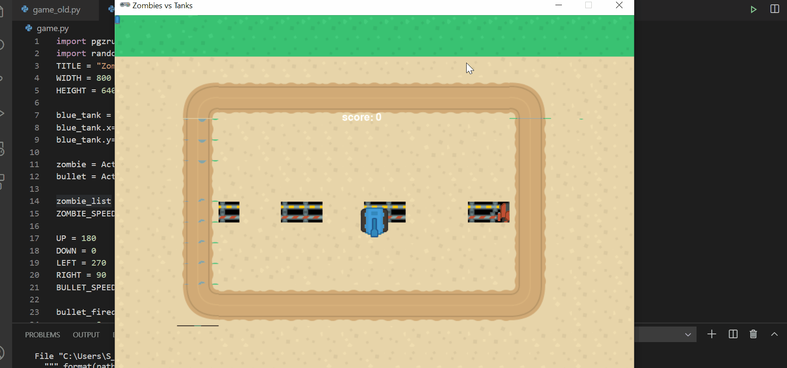

Gaming
Gaming in Python : PyGame vs Arcade vs PyGame Zero - A high-level view of the gaming libraries in Python. Although note I now prefer Godot, see reasons below
Start here for practical programming:
Your First Game in Python: Create an Arkanoid Clone in less than 30 minutes
We’re going to write a clone of Arkanoid (Breakout) using Python and PyGame Zero. In this post, I want to show you how easy it is to write a simple game. Let’s get started! All the code is available here: https://github.com/shantnu/arkanoid-clone The images are from Kenney,

Zombies vs Tanks: A Simple game in Python and Pygame Zero
This post is a follow on from my last post which introduced gaming, make sure you’ve read it. The source code is here: https://github.com/shantnu/zombie_tanks So this time we’ll build a slightly (but just slightly!) more complicated game: The new things this time are: The tank

I decided to move to Godot for more complex games, here is the reason why
Godot Series (also has a dedicated page):
Part 1 Getting Started with Godot Game Programming for Complete Beginners
Part 2 Player Animation
Part 3 Level Design and Adding a Camera
Part 4.1:Adding Hazards and coins
Part 5: Adding Enemies to our game
Part 6: Adding UI and exporting our game